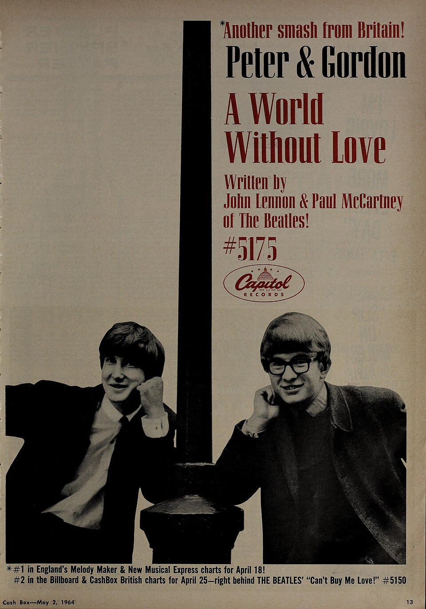

A World Without Love is a Paul McCartney song that the Beatles never recorded.
Peter and Gordon cut it on January 21, 1964, and it reached number one in both the UK and the US.
John Lennon reportedly found the lyric silly, so McCartney gave the song away.

Table of Contents
The Origin of A World Without Love
A Teenage Song With No Home
McCartney wrote the song when he was about 16, long before Beatlemania.
It carries the Lennon-McCartney credit, but Lennon had almost nothing to do with it.
Lennon later remembered it as something McCartney already had before the Beatles.
He reportedly thought the opening line, "Please lock me away," was ridiculous.
McCartney first offered the song to Billy J Kramer, who declined it.
The Asher Connection
In 1963 McCartney was dating the actress Jane Asher and staying at her family's home in London.
Her brother Peter had formed a duo with Gordon Waller.
After the pair signed a recording contract, Peter asked McCartney for a song.
The tune had no bridge, so McCartney wrote one shortly before the session.
Peter Asher still owns McCartney's home demo, the only known Beatle recording of the song.
A short clip of it surfaced online in January 2013.
Recording and Release
The Abbey Road Session
Peter and Gordon recorded it on January 21, 1964, at EMI Studios in London.
Norman Newell produced the session.
Asher has said McCartney did not produce the record and was not there.
Columbia released it in the UK in February 1964 as their first single.
The B-side was "If I Were You," written by the duo themselves.
Capitol issued it in the US as catalog number 5175.
How It Sounds
Stereogum's Tom Breihan hears a jangly, prettily harmonized song with a murmuring organ.
Cash Box called the single "a tantalizing, easy-beat thumper" in April 1964.
The Chart Run
| Chart | Result |
|---|---|
| UK Record Retailer | No. 1 |
| UK New Musical Express | No. 1 |
| Billboard Hot 100 | No. 1 (one week, June 27) |
| Cash Box Top 100 | No. 1 |
| Canada (CHUM) | No. 1 |
| Ireland (IRMA) | No. 1 |
| Australia (Kent Music Report) | No. 2 |
A British Smash on Both Sides of the Atlantic
A Capitol ad dated May 2, 1964, boasted that it was number one on the Melody Maker and NME charts for April 18.
The record finished 1964 at number 30 on Billboard's year-end Hot 100.
It is one of only two Lennon-McCartney songs to top the US chart by an act other than the Beatles.
The other is Elton John's 1974 version of "Lucy in the Sky with Diamonds."
The Rock and Roll Hall of Fame lists it among its 500 Songs that Shaped Rock and Roll.
Legacy and Cover Versions
After the Number One
Peter and Gordon kept charting with McCartney songs, including "Nobody I Know" and "I Don't Want to See You Again."
"I Go to Pieces" reached number 9 in the US, and "Lady Godiva" reached number 6 in 1966.
The duo split in 1968, and Gordon Waller died on July 17, 2009.
Peter Asher became a producer, and he was still playing the song at concerts in 2026.
Other Versions
- Bobby Rydell, whose rival version charted in the US in 1964
- The Supremes, on their 1964 album A Bit of Liverpool
- Vonda Shepard, on the 2001 Ally McBeal soundtrack
Where It Fits
The record belongs to 1964, the year the British Invasion reached America.
You can hear the group's own hits in our I Want to Hold Your Hand story and our Beatles biography.
The sound belongs to the British Invasion hub, and you can hear more 1964 records on Radio Dial.
FAQ
Who wrote A World Without Love?
Paul McCartney wrote it as a teenager.
It is credited to Lennon-McCartney, but John Lennon had little to do with it.
Did the Beatles ever record this song?
No.
McCartney offered it to Billy J Kramer, who declined, and Lennon reportedly found the lyric silly.
Peter Asher then asked for it, and McCartney finished the bridge for the session.
Was it a number one hit?
Yes.
It reached number one on the UK Record Retailer and NME charts.
In the US it topped the Billboard Hot 100 for one week, the week of June 27, 1964.
Who were Peter and Gordon?
Peter Asher and Gordon Waller were a British pop duo.
Asher's sister Jane was McCartney's girlfriend in 1964.
The duo split in 1968, and Waller died on July 17, 2009.
Who else recorded the song?
The Supremes covered it on their 1964 album A Bit of Liverpool.
Bobby Rydell released a rival version in 1964, and Vonda Shepard recorded it for the Ally McBeal soundtrack in 2001.
A song one Beatle shrugged off became a transatlantic number one for a brand-new duo.
Wikipedia's entry on the song adds more on the chart history and cover versions.
Press play above and hear A World Without Love the way Peter and Gordon cut it in January 1964.